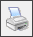

Print commandSends a copy of the contents of the active Structure Editor window to a specified printer or file. Options are available for defining the page range, number of copies, and other printing characteristics. Print setup options are managed using the Preferences button on the Print dialog box.
Before using this command, you must install and select a printer. For help installing a printer, see the Windows documentation.